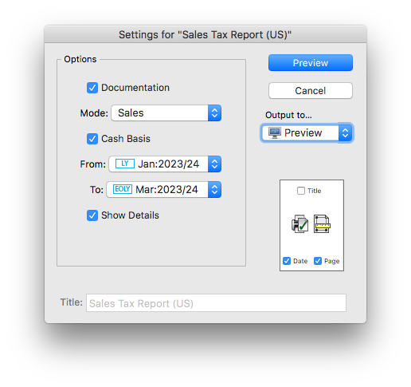

MoneyWorks Manual
The Sales Tax Report
The sales tax report is used to itemise and summarise your sales tax liability. You will run this at the end of each period for which you need to report on sales tax. To run the report:
- Choose Reports>Sales Tax
The Sales Tax report settings will open

- Set the Mode pop-up to Sales
If Mode is set to Documentation, the report (when run) will produce a description of the output it would normally produce.
- Set the From and To pop-ups to the periods that encompass your reporting cycle
If you are reporting on just one period, these will be set to the same
Show Details: If this option is on, each transaction line will also be shown on the report. This will make the report longer, but it may be useful if you find that your sales tax figures don’t seem to make sense.
- Click the Preview (or Print) button to view the report
The report will list every posted Sales transaction (i.e. debtor invoice, and receipts that are not paying invoices) in the nominated reporting period, along with its sales tax. The report will also list any sales transactions from prior periods that were posted in the reporting period, allowing prior period adjustments to be automatically included.
At the end of the report, the total sales tax is broken down into its component parts (e.g. State and County).
Note: Transactions entered prior to MoneyWorks 5.2 are shown in blue (the sales tax handling was different in older versions). The sales tax on these cannot be broken down into its component parts, so the total is listed at the end of the report.

Individual sales are listed at the top of the report, and the total sales taxes collected are summarised at the bottam (by tax code).
Sales Tax Report and Purchases
The Sales Tax report has a Purchases mode. If set to this, the report will look at purchase transactions (i.e. creditor invoice and direct payments) that were made in nominated time period using versions of MoneyWorks prior to 5.2. Sales tax on these transactions was not automatically “expensed”, and you needed to put through a journal at month end to adjust for this. The report will list the transactions, and the required journal.
Refunds and Sales Tax
Because the Sales Tax report only considers “Sales” transactions (i.e. Debtor Invoices and direct Receipts that bypass the Debtors system), it will not recognise refunds that you have put through as payments.
Refunds in MoneyWorks should always be done by applying a Return Refund to Debtor on a previously raised credit note (i.e. negative debtor invoice). Apart from ensuring this will be picked up correctly for Sales tax purposes, it will also ensure that any associated inventoried items on the sale are returned to stock at the correct valuation1. Refunds can also be achieved by using a negative Receipt (although counter-intuitive, this is a sales reversal, and the inventory and tax will be handled correctly).
1 If you use a payment transaction (as might seem logical), you are effectively buying the inventory back but at the price for which you sold them. This will upset your inventory valuation. ↩